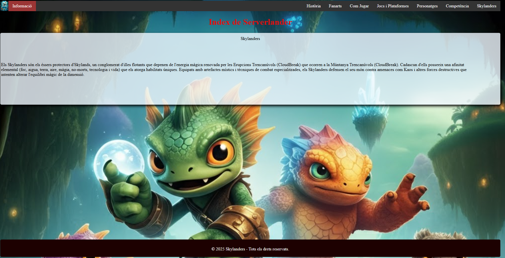
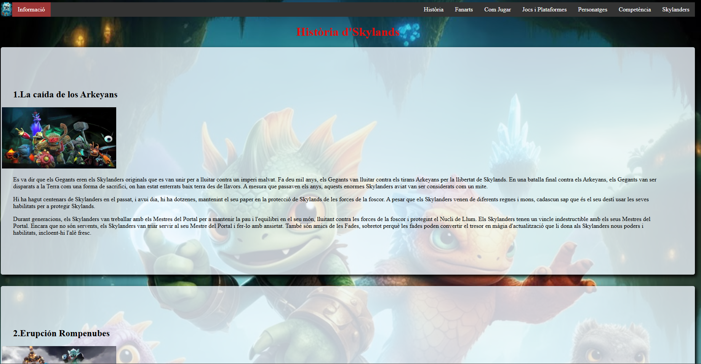
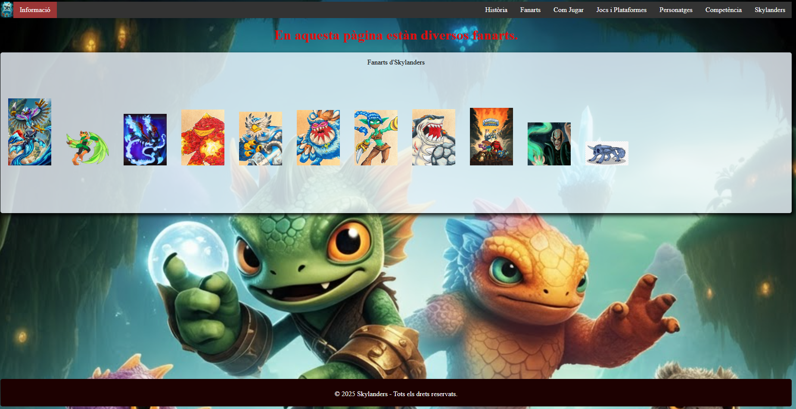
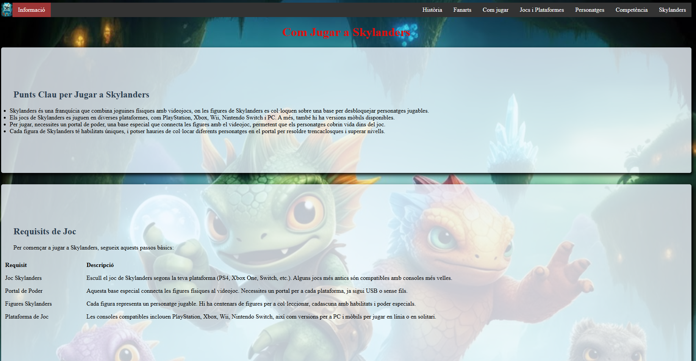
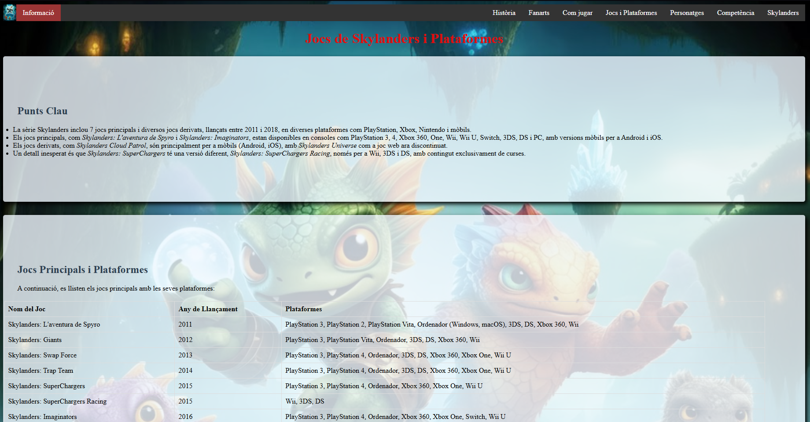
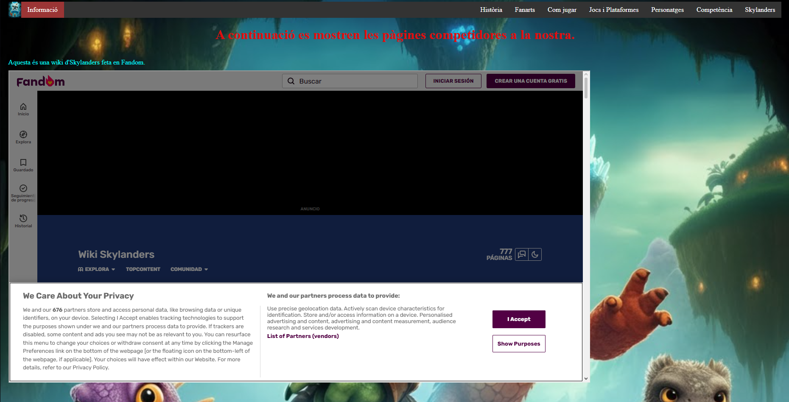
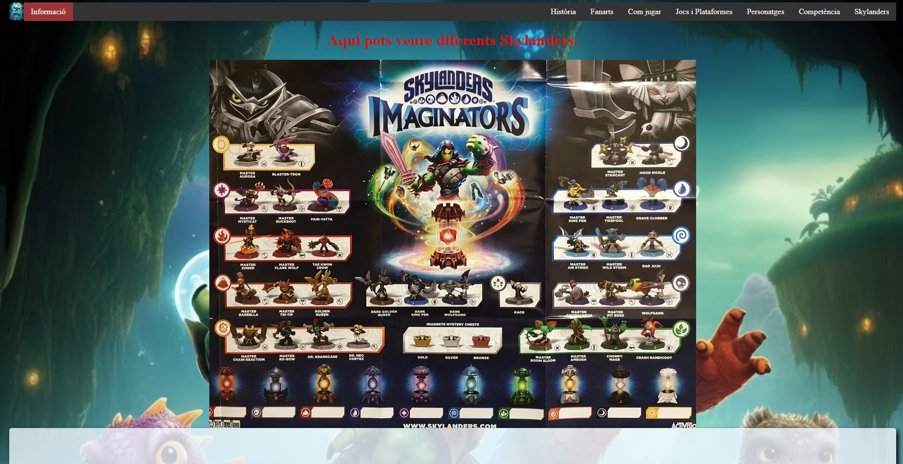

Serverlander
Pere Munar Payeras
Aquesta web està disponible per veure al teu dispositiu
Pots compartir-la amb la teva institució educativa








Serverlander és una pàgina web dissenyada sobre la saga de jocs Skylanders i algunes se les seves figures jugables del darrer joc (Skylanders Imaginators).
Amb Serverlander podràs:
• Informarte de com jugar un joc d'Skylanders.
• Veure fanarts d'Skylanders.
• Informarte sobre l'història dels Skylanders en ordre cronològic.
• Consultar tots els jocs d'Skylanders fins a la data actual.
• Informarte sobre els personatges principals(NPC) dels Jocs d'Skylanders.
Informació de la web
DesenvolupadorPere Munar Payeras